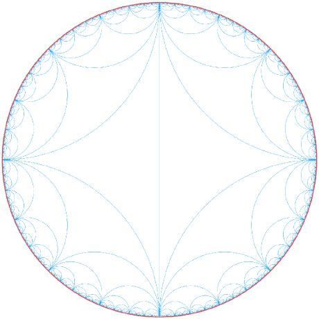

Ross Paterson |
 |
General expository writing, I intend on writing some more when my desk is a little clearer.
Below are notes for the courses not taught from slides at this summer school. Some of these courses do have notes available, and these are often far better than what I have here. These were TeX'd live which is a lazy excuse for my terrible typesetting, and I am to blame for every error found. The official website for the summer school is here.